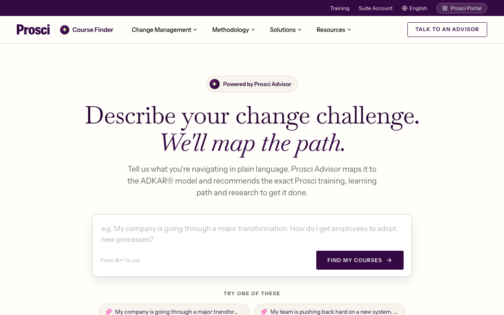

One AI-guided experience that turns a messy change challenge into a confident program choice — explored as three distinct designs, built on a single system drawn from your live store.
HR and L&D leaders arrive with a real, time-pressured situation — "we rolled out a new system and adoption is stalling" — not a catalog query. Today they're left to guess which program fits.
Meet people in plain language instead of filters and taxonomy.
Every result explains why it fits — not a bare results grid.
Success is a decisive choice, not time-on-page or browsing.
Every direction shares a single system derived directly from the live Prosci store — the damson-and-cream palette, Baskervville editorial headlines, and store-true cards. The brand reads warm, credible, confident across all three.
They diverge deliberately on the one question that matters: how a buyer gets to the right course.

| A · Photo cards | B · Reasoning cards | C · Ask the advisor | |
|---|---|---|---|
| Entry point | Browse a smart catalog | Browse, with rationale | Describe in one box |
| Where reasoning lives | A match pill | On each card | The whole experience |
| Who assembles the answer | The buyer | The buyer | The advisor |
| Feels like | Today's store, smarter | A guided shortlist | A consultant |
| Adoption risk | Lowest | Moderate | Boldest · highest upside |
All three are real, clickable prototypes built on the same system — the choice is a strategic one, not a technical one.